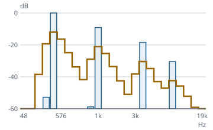

Erst messen, dann kodieren
Funktionsübersicht für die Präsentation des envisionz-Frameworks, Stand 28.09.2026. Die Messstrecke für Audioverfahren: Signale in Gleitkomma und ganzzahlig, WAV ohne Fremdbibliothek, Spektren, Fenster und Bark-Skala, zeitliche Ausrichtung und sechs Fehlermaße bis zum Rauschen-zu-Verdeckung-Verhältnis, dazu die Kommandozeile für Messreihen. Je Verfahren: Zweck, Methoden, Einsatz im Framework, Anwendungen, Beispiele. Die Beispiele sind gekürzt.

Spektren, Barkskala und Fenster gerechnet: Bandenergien und Verdeckungsschwelle eines erzeugten Signals.Grundsätze des Moduls
envisionz.math.Fft; die frühere eigene Kopie ist entfallen.Signale envisionz.audiometrik
Audiosignal und Ganzsignal – Gleitkomma für die Maße, Ganzzahl für den verlustfreien Weg
Audiosignal hält Kanäle in double im Bereich −1…+1; alle Messungen arbeiten darauf. Ganzsignal ist dieselbe Sache ganzzahlig, mit Wortbreite – die Form, in der ein verlustfreier Kodierer seine Eingabe sieht und in der „bitgenau“ wörtlich zu nehmen ist. Hintergrund, Formeln und Pseudocode →
Methoden
Audiosignal(kanaele, abtastrate),ausMono(werte, rate),leer(kanalzahl, laenge, rate)kanal(i),alsMono(),spitzenwert(),dauerSekunden()aufLaenge(n),verschoben(versatz),ausschnitt(von, bis),skaliert(faktor)Ganzsignal(kanaele, rate, bitsJeWert),gleicht(andere),ersterUnterschied(andere),rohgroesseBytes(),alsAudiosignal()
Eingesetzt in
Wofür
Gemeinsame Datenform für Codec und Messstrecke; Nachweis, dass ein Rückweg jeden Wert unverändert liefert.
WAV envisionz.audiometrik
Wavleser, Wavschreiber, Wavformat – RIFF/WAVE unmittelbar
PCM mit 8, 16, 24 und 32 Bit sowie IEEE-Gleitkomma mit 32 und 64 Bit, auch WAVE_FORMAT_EXTENSIBLE; unbekannte Blöcke werden übersprungen. Gelesen wird wahlweise als Audiosignal (−1…+1) oder als Ganzsignal mit den Rohwerten. Hintergrund, Formeln und Pseudocode →
Methoden
Wavleser.lies(Path),lies(byte[]),liesFormat(Path),liesGanz(Path)Wavschreiber.schreib(Path, signal[, bitsJeWert, gleitkomma]),schreibGanz(Path, ganzsignal),alsBytes(...)Wavformat:abtastrate(),kanaele(),bitsJeWert(),istGleitkomma(),ART_PCM,ART_GLEITKOMMA
Eingesetzt in
Wofür
Bezug und Prüfling einlesen, dekodierte Ströme als WAV zurückschreiben.
WavReader/WavWriter/WavFormat aus framework-audio; die Zusammenführung ist offen.Spektren, Fenster und Gehörmodell envisionz.audiometrik
Spektren, Fenster, Barkskala
Spektren: Leistungsspektrum und Kreuzkorrelation über die FFT aus framework-math. Fenster: Hann, Hamming, Sinus und Kaiser-Bessel-abgeleitet (mit eigener Besselfunktion I0). Barkskala: Bandeinteilung nach Bark, Bandenergien und eine Verdeckungsschwelle mit Spreizung nach Schroeder und festem Abzug – ohne Tonalitätsschätzung und ohne Ruhehörschwelle. Spektrum und Fenster – Hintergrund, Formeln und Pseudocode → Bark-Skala und Verdeckungsschwelle – Hintergrund, Formeln und Pseudocode →
Methoden
Spektren.leistungsspektrum(zeitsignal),kreuzkorrelation(a, b, n)Fenster.hann(n),hamming(n),sinus(n),kbd(n, alpha),besselI0(x),anwenden(quelle, versatz, fenster)Barkskala(binzahl, rate),bandzahl(),bandMitteHz(b),bandenergien(leistung),verdeckungsschwelle(energie, abzugDb),barkAusHz(hz)
Eingesetzt in
Wofür
Grundlage der spektralen Maße und des NMR; später Baustein eines verfeinerten Gehörmodells.
Ausrichtung envisionz.audiometrik
Ausrichtung – Versatz und Pegel ausgleichen, bevor gemessen wird
Ein perfekter Codec mit 500 Abtastwerten Verzögerung bekäme ohne diesen Schritt einen katastrophalen SNR. Der Versatz wird aus der Kreuzkorrelation der Mono-Summen geschätzt, wahlweise auch der Pegel. Das Verschieben füllt einen Rand mit Nullen; deshalb weist die Ausrichtung den gültigen Bereich aus. Hintergrund, Formeln und Pseudocode →
Methoden
Ausrichtung.richteAus(bezug, pruef, maxVersatz, mitPegel)versatz(),verstaerkung(),ausgerichtet(),gueltigVon(),gueltigBis()schaetzeVersatz(bezug[], pruef[], maxVersatz),schaetzeVerstaerkung(bezug, pruef)
Eingesetzt in
Wofür
Codec-Ausgaben mit unbekannter Verzögerung vergleichbar machen.
Die Maße envisionz.audiometrik
Masse – sechs Fehlermaße
Alle setzen ausgerichtete, gleich lange Signale voraus. Zeit- und Spektralmaße – Hintergrund, Formeln und Pseudocode → NMR – Hintergrund, Formeln und Pseudocode →
| Maß | Methode | Bedeutung | Richtung |
|---|---|---|---|
| Bitgenau | istBitgenau(bezug, pruef, schranke) | verlustfreier Rückweg bestätigt | ja ist besser |
| Größte Abweichung | groessteAbweichung(bezug, pruef) | größter Einzelfehler | klein ist besser |
| SNR | snrDb(bezug, pruef) | Störabstand über alles | groß ist besser |
| Segment-SNR | segmentSnrDb(bezug, pruef, rahmen) | abschnittsweise, Stille ausgelassen, auf −10…+35 dB begrenzt | groß ist besser |
| Spektralabstand | spektralabstandDb(bezug, pruef, rahmen, vorschub) | mittlerer logarithmischer Spektralabstand | klein ist besser |
| NMR | nmrDb(bezug, pruef, rahmen, vorschub, abzugDb) | Rauschen zur Verdeckungsschwelle, Mittel und Spitze; negativ heißt unter der Schwelle | klein ist besser |
Eingesetzt in
Wofür
Rate-Distortion-Kurven eines Codecs; Vergleich zweier Verfahren auf demselben Material.
Messstrecke und Bericht envisionz.audiometrik
Messstrecke, Messwert, Bericht – alles in einem Aufruf
Die Messstrecke richtet aus, schneidet beide Signale auf den gültigen Bereich (mit einem Rahmen Sicherheitsrand) und liefert der Reihe nach Versatz, Messbereich, ggf. Pegelfaktor, Bitgenauigkeit, größte Abweichung, SNR, Segment-SNR, Spektralabstand und NMR als Mittel und Spitze. Vorgabe: Rahmen 1024, Vorschub 512, Versatz bis 8192, Ausrichtung an, Pegelanpassung aus, 10 dB Abzug. Bericht hängt eine Zeile an eine CSV und legt bei Bedarf die Kopfzeile an. Hintergrund, Formeln und Pseudocode →
Methoden
new Messstrecke().rahmenlaenge(n).vorschub(n).maxVersatz(n).ausrichten(b).pegelanpassung(b).nmrAbzugDb(d)vergleiche(bezug, pruef)→List<Messwert>Messstrecke.bitrateKbps(bytes, sekunden),kompressionsverhaeltnis(bytes, bezug, bitsJeWert)Messwert:name(),wert(),einheit(),groesserIstBesser(),alsZeile();Bericht.ergaenze(datei, kennung, bitrate, werte)
Eingesetzt in
Wofür
Messreihen über mehrere Bitratenstufen, Punkt für Punkt in eine CSV für die Kurve.
Beispiel – Bezug gegen dekodierte Fassung, Zeile an die CSV
Audiosignal bezug = Wavleser.lies(Path.of("original.wav"));
Audiosignal pruef = Wavleser.lies(Path.of("dekodiert.wav"));
List<Messwert> werte = new Messstrecke().rahmenlaenge(2048).vergleiche(bezug, pruef);
werte.forEach(w -> System.out.println(w.alsZeile()));
long strombytes = Files.size(Path.of("kodiert.bin"));
Bericht.ergaenze(Path.of("rd.csv"), "128kbps", Messstrecke.bitrateKbps(strombytes, bezug.dauerSekunden()), werte);Kommandozeile envisionz-commandline-audiometrik · cmd.audiometrik
Audiometrik – die Messstrecke im Hausformat -name:wert
Zwei Aufgaben: vergleich (Vorgabe) und steckbrief. Die CSV wird angehängt, nicht überschrieben – eine Kurve entsteht aus mehreren Aufrufen. Rückgabewerte für Skripte: 0 bitgenau, 10 abweichend, 1 Aufruffehler, 2 Schalterfehler, 3 sonstiger Fehler. Ohne Argumente erscheint die Aufrufzeile.
Beispiele
Audiometrik -op:steckbrief -in:datei.wav
Audiometrik -op:vergleich -ref:original.wav -pruef:dekodiert.wav -strom:kodiert.bin -ausgabe:rd.csv -kennung:128kbps
Audiometrik -ref:a.wav -pruef:b.wav -rahmen:2048 -pegel:ja -abzug:6Einsatzmatrix im Framework
Welche Module welche Teile heute nutzen, im Quelltext gezählt (ohne Proben).
| Modul | Signale | WAV | Spektren / Bark | Ausrichtung | Maße | Messstrecke / Bericht | Wofür |
|---|---|---|---|---|---|---|---|
| framework-audiocodec | ● | Ganzsignal als Ein- und Ausgabe des verlustfreien Kodierers | |||||
| commandline-audiocodec | ● | ● | WAV lesen und schreiben, Stapellauf, FLAC-Vergleich | ||||
| commandline-audiometrik | ● | ● | ● | Vergleich, Steckbrief, CSV für Rate-Distortion-Kurven |